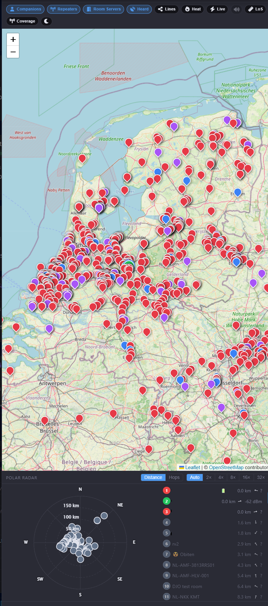
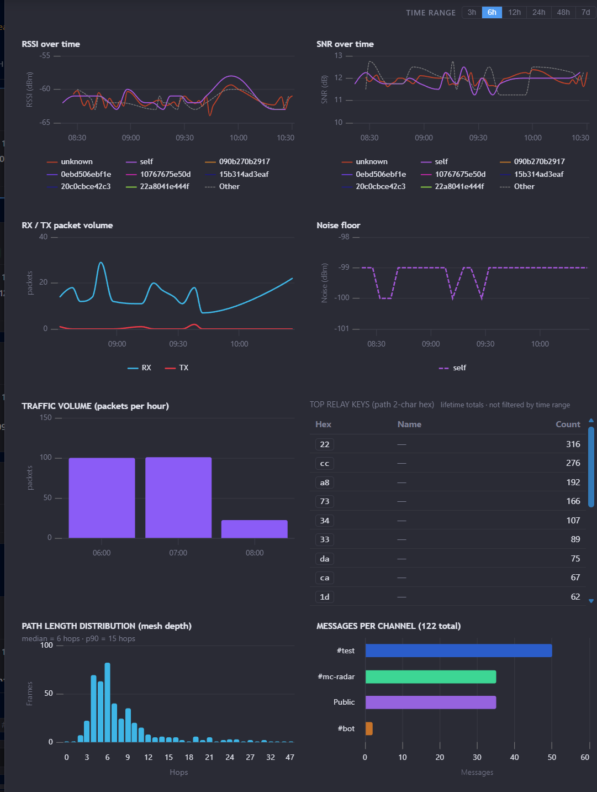
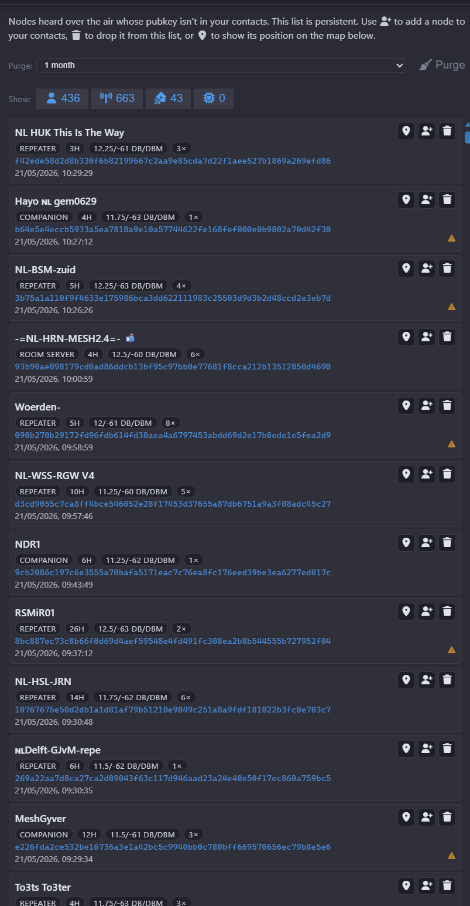
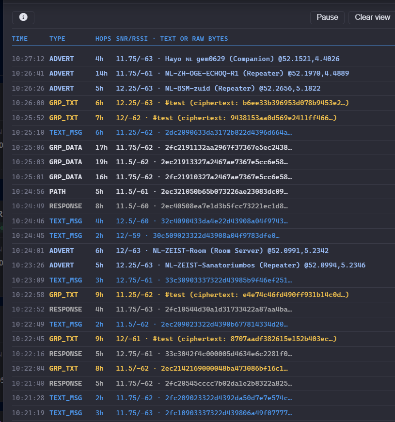
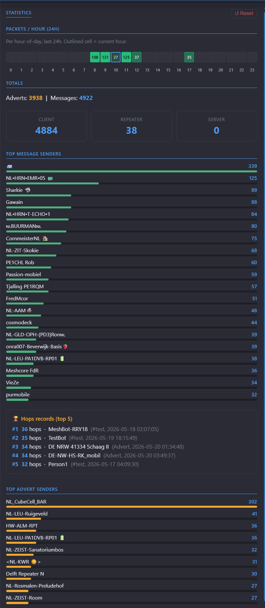
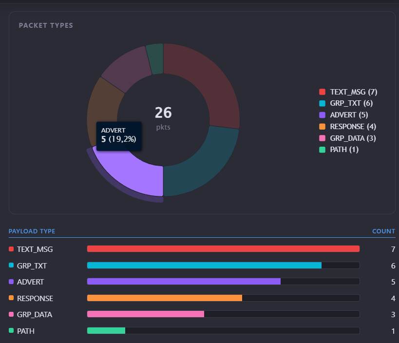

MeshCore Dashboard
A real-time, in-browser dashboard for your MeshCore LoRa mesh — node telemetry, messaging, topology, history and analytics served straight from the Domoticz plugin over a native WebSocket channel. This page is a static feature tour; install the plugin to get the interactive version.
{kind=link}
Feature tour
{kind=link}

🗺️ Mesh topology & path lines
Leaflet map plots every contact (and optionally every heard node) and draws the real multi-hop repeater paths recent messages traversed.
{kind=link}

📈 Historical analytics
Time-series side panel — RSSI, SNR, noise floor, RX/TX packet volume, hourly traffic, top relay keys and per-channel message stats. SQLite-backed, schema-versioned, 30-day window.
{kind=link}

👂 Heard nodes
Persistent list of mesh nodes that aren't in your contacts. Per-node advert count, per-type filters, GPS pin, and bulk purge by age or low hit-count.
{kind=link}

🚿 RX firehose
Live packet stream with type filters, pause/resume, and per-row SNR/RSSI/path-len breakdown for deep mesh debugging.
{kind=link}

📊 Statistics
Lifetime totals and leaderboards — messages, adverts, top senders, deepest hops, longest-running relay keys.
{kind=link}

🍩 Packet types
Donut breakdown of RX payload types — adverts, channel messages, DMs, ACKs, status responses, anonymous requests…